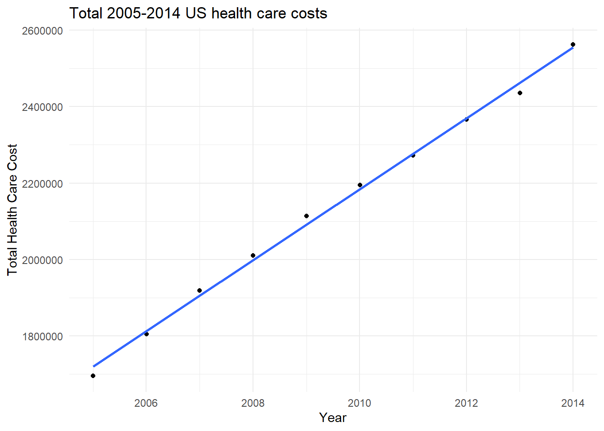
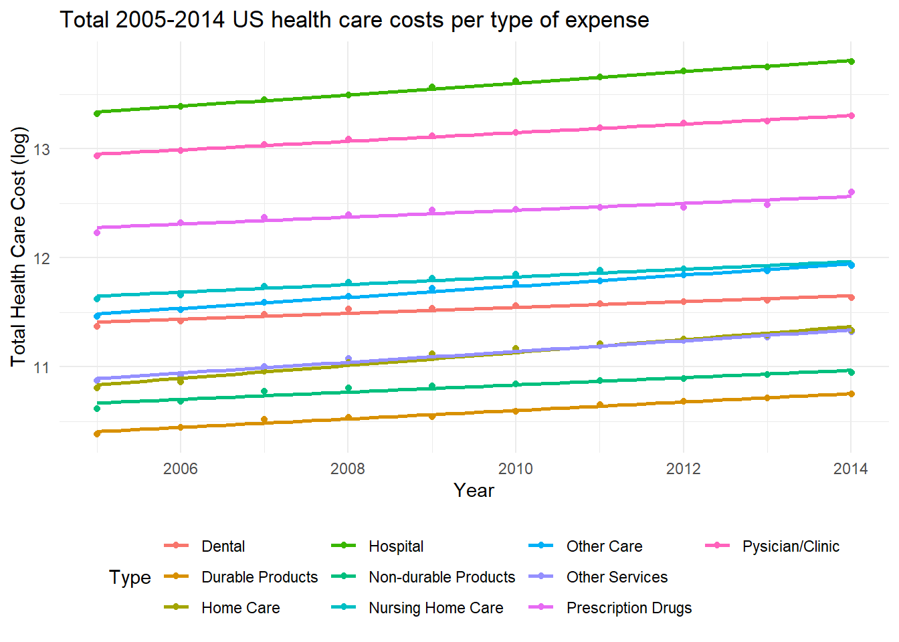
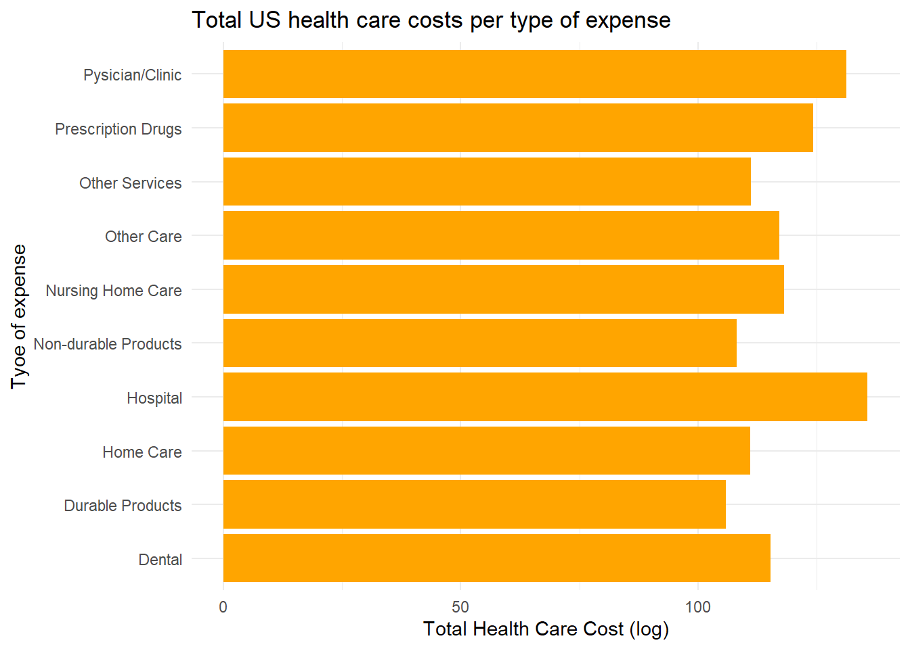
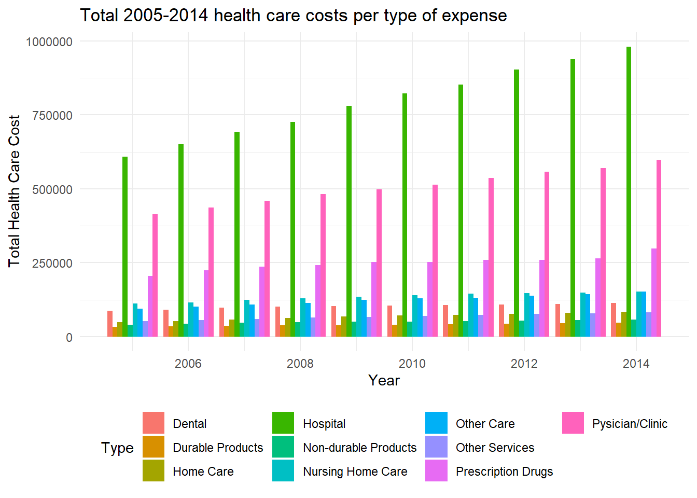
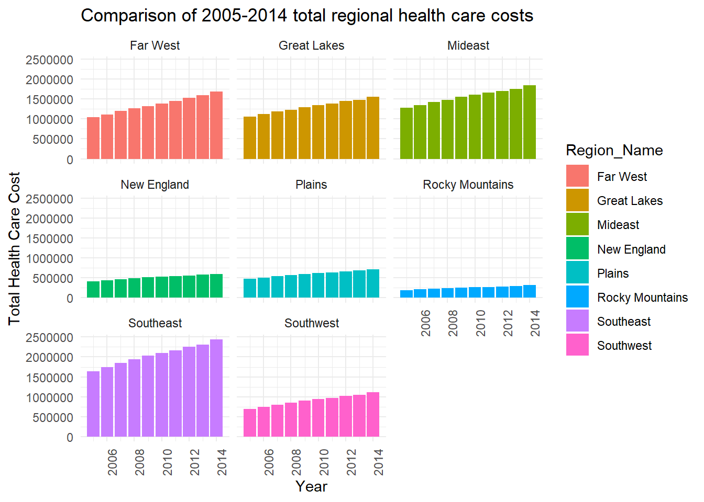
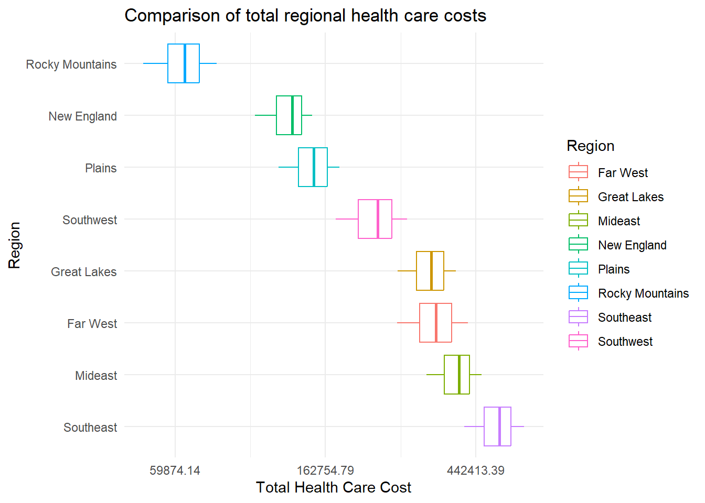
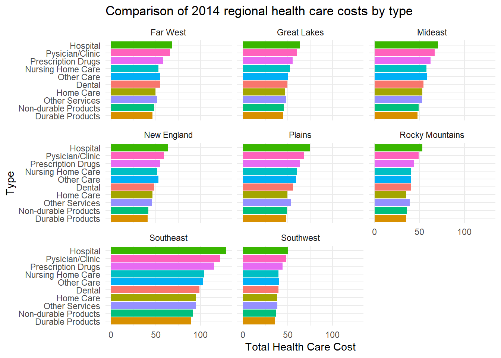
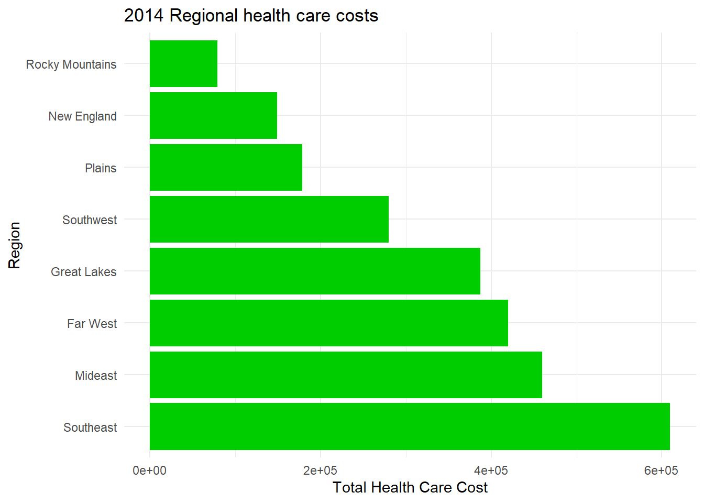
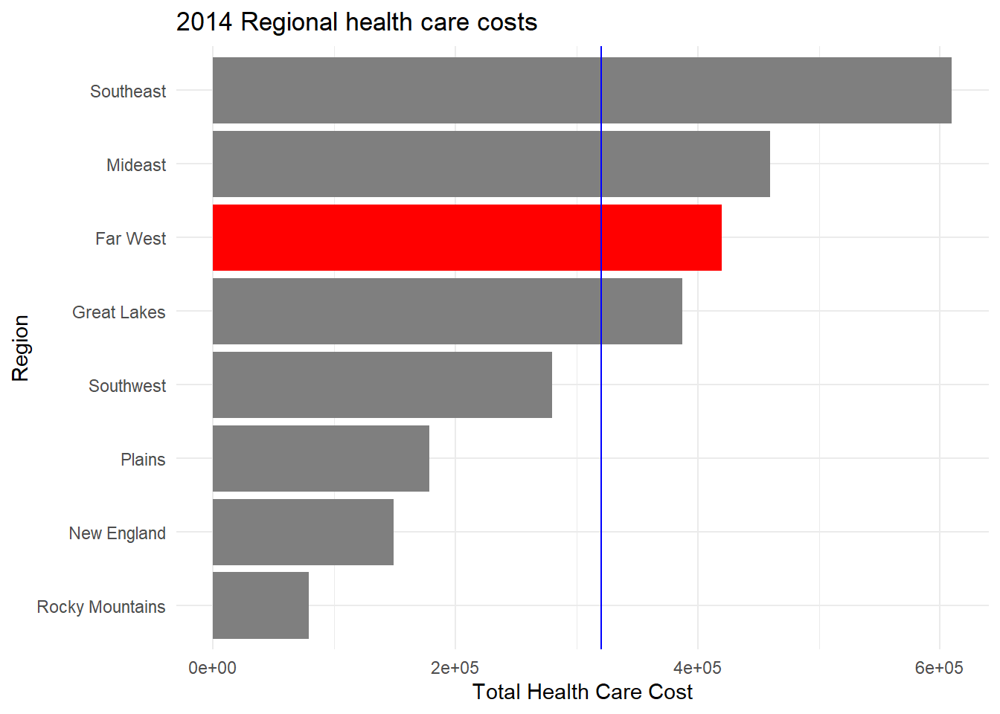
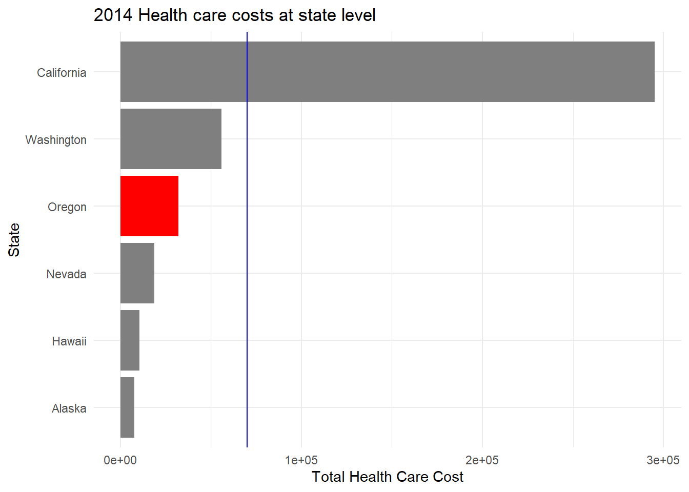

The data set we were working with was the “US Healthcare Spending Per Capita” (source: Dept of Health and Human Services). After completing the initial review and exploratory analysis using a few “top level” R commands and some basic plots we began further analysis. This analysis focused on the questions of how health care costs changed over the time span of 2005 to 2014, as well as what some of the trends were related to the data provided. After looking into these questions, we spent some time with the most recent year available within the data set looking into similar concerns, but at a more regional and local level. With this review and analysis, we were able to discern that health care costs at the personal level had risen over the indicated time spans and that some areas within the United states have drastically different health care costs.
INTRODUCTION AND BACKGROUND
We all experience it, some of us more than others, some of us only occasionally. We hear about it on the news, and it becomes more prevalent every fall. Health care costs in the United States seems to have gotten out of control so much that there even a litany of memes about it. Each time we visit the doctor or dentist, pay our co-pays and deductibles to get our prescriptions filled, and are told every fall to make your health insurance choices during open enrollment we feel the sting of rising health care costs.
Recently we were given access to some health care data from the Dept of Health and Human Services showing the overall personal health care costs as well as breakdowns of different types of personal health care and what those costs have been. The data set provided has a category for 11 different health care types throughout all 50 states and the District of Columbia. The states are further categorized into different regions. All data is available for the years between 2005 and 2014, inclusive. With this information we will be looking into the truth about healthcare costs in the United States and if they really are on the rise. We will also investigate the types of health care that have been the most expensive as well as which regions and states have the highest costs.
After we are done, we should have confidence in the data we were provided as well as some the assumptions and theories we can make from looking over the data. In the next section we will explain some of methods used to come to these conclusions as well as some of the issues and intricacies of the data we faced.
METHODOLOGY
As mentioned previously we were provided with data from the Dept of Health and Human Services that included the following variables:
Item - a category of different types of personal health care as well as the total personal health care costs.
Group - This includes labels of the United States as a whole, Region, and State.
Region_Name - Nine different regions broken out by geographical location.
Year - These were in separate individual columns for each year’s total cost (aka expense) from 2005 to 2014, inclusive.
Average Percent Growth - Numeric value representing the yearly increase in costs.
Of the above variables we used all but the Average Percent Growth in our analysis. We did not utilize this particular data as we did not see a need for it in regard to our primary questions. Some additional variables that were identified and removed early on in our assessment included:
Code - A numerical number representing the Item categories. This variable was redundant as we already had the more descriptive item labels.
Region Number - A numerical number representing the different regions. This variable was redundant as we already had the more descriptive region names.
There were some additional cleanup methods used to create a more “tidy” and useful data set. This included some renaming to reduce title lengths, as well as some pivoting of the table to create a more cohesive variable for grouping the yearly costs.
Included below is the different methods and techniques in code form showing the process and concepts used to stage and analyze the data. Please note that some code is included but we have chosen to not display the results. This is to be transparent in our thinking and methodology without creating additional clutter throughout the document.
Setting up data (aka Data Wrangling)
Reading in the dataset and performing initial review of the contents within.
Notes from review of data for consideration moving forward:
Regions and US as a whole are represented. This causes State_Name appears to have blank values, consider this during further analysis. The variable ‘Item’ appears to all be in (Millions of Dollars). Remove this portion of text, or split to column with units. ‘Code’ and ‘Region_Number’ are redundant to the descriptive names and will likely not be used for any of the analysis. ’Average_Annual_Percent_growth’ should be renamed to shorter, easier name.
Creating a more “tidy” dataset by addressing the notes made during the initial review.
Removing the (Millions of Dollars) notation after the variable names in the ‘Item’ column and renaming the column name to denote the unit of measure as well as relabeling the Item variable names to a more compressed form. Also, removing ‘Code’ and ‘Region_Number’ as these are redundant to the descriptive names and should not be needed for any of the analysis.
Code
hcs<-HealthCareSpending%>%mutate(across('Item', str_replace, '\\ \\(Millions of Dollars\\)', ''))%>%select(-c(1,4))hcs<-hcs%>%mutate(across('Item', str_replace, 'Personal Health Care', 'Total'))
1a. Since 2005 have healthcare costs increased/decreased/stayed the same (or something else)?
With this question in mind and the review of the exploratory analysis performed above we should make the assumption that healthcare costs increased between 2005 and 2014.
We should be able to test this assumption by looking at the ‘Personal Health Care’ data over time since it is a summation of all other ‘Items’. To do this this we will need to pivot the data to allow for listing of all costs for all years categorized to a single column.
Now that our data is cleaned up we can create the scatter plot and add the linear regression line for analysis.
Code
hcs2005_long%>%filter(Item=="Total", Region_Name=="United States")%>%ggplot(aes(x=year, y=cost_in_millions))+geom_point()+geom_smooth(method="lm", se=FALSE)+labs(x="Year", y="Total Health Care Cost", title="Total 2005-2014 US health care costs")+theme_minimal()

Looking at the line in our plot above we can easily see that the healthcare costs in the United States as a whole have increased between 2005 and 2014. Not only have they increased, but as shown, the costs have risen at a drastic rate.
With consideration of the information gained from the plot(s) above we can state that our Null Hypothesis is that as time increases personal healthcare costs remain the same. This in turn leads us to our state that our Alternate Hypothesis is that personal health care increases as time progresses.
For curiosity sake, let’s add in the models for each individual ‘Item’ group.
Code
hcs2005_long%>%filter(Region_Name=="United States"&Item!="Total")%>%ggplot(aes(x=year, y=log(cost_in_millions), color=Item))+geom_point()+geom_smooth(method="lm", se=FALSE)+theme_minimal()+theme(legend.position="bottom")+scale_color_discrete(guide=guide_legend(nrow=3), name="Type")+labs(x="Year", y="Total Health Care Cost (log)", title="Total 2005-2014 US health care costs per type of expense")

Looking at the plot above we can easily see that the healthcare costs in all categories for the United States as a whole have increased between 2005 and 2014. But we should test this further to be sure.
Let’s look at fitting the linear regression model.
Call:
lm(formula = hcs2005us$cost_in_millions ~ hcs2005us$year)
Residuals:
Min 1Q Median 3Q Max
-27010 -7094 1879 11964 22934
Coefficients:
Estimate Std. Error t value Pr(>|t|)
(Intercept) -1.530e+06 7.573e+04 -20.20 3.77e-08 ***
hcs2005us$year 2.942e-03 6.059e-05 48.55 3.58e-11 ***
---
Signif. codes: 0 '***' 0.001 '**' 0.01 '*' 0.05 '.' 0.1 ' ' 1
Residual standard error: 17370 on 8 degrees of freedom
Multiple R-squared: 0.9966, Adjusted R-squared: 0.9962
F-statistic: 2357 on 1 and 8 DF, p-value: 3.584e-11
From the data above provided by our summary we can see, under “Coefficients”, the column labeled “Estimate” gives us a Y-intercept of -1.530e+06 and the coefficient for the independent variable year. With this information we can generate our equation for the regression line:
Cost = 0.002942*(year)
The p-value is shown as 3.584e-11 which indicates that the association is statistically significant as it is much less than 0.05 indicating that our Null Hypothesis should be rejected.
With consideration of our initial question: Since 2005 have healthcare costs increased/decreased/stayed the same (or something else), we can conclude that:
The assumption that healthcare costs increased between 2005 and 2014 is true. This is backed up by our t-test hypothesis testing where we stated that our Null Hypothesis was that as time increases personal healthcare costs remain the same. We also stated that our Alternate Hypothesis was that as time increases so does personal healthcare costs.
Simply put, we have confidence that, since 2005, healthcare costs have increased.
Addressing the questions of interest (Part 1, continued)
1b. Since 2005, what categories have dominated healthcare spending?
A bar chart would best represent this makeup of the data in regard to the question. Let’s start with a basic bar charts and look, once again, at the United States as a whole.
Code
hcs2005_long%>%filter(Group=="United States"&Item!="Total")%>%ggplot(aes(x =Item, y =log(cost_in_millions)))+geom_col(fill="orange")+coord_flip()+theme_minimal()+labs(x="Tyoe of expense", y="Total Health Care Cost (log)", title="Total US health care costs per type of expense")

The basic bar chart shown above gives a good picture of the various costs but let’s look at how this fared each year. We can do this with another bar chart, but with the additional factor of year.
Code
hcs2005_long%>%filter(Group=="United States"&Item!="Total")%>%ggplot(aes(x =year, y =cost_in_millions, fill =Item))+geom_col(position ="dodge")+theme_minimal()+theme(legend.position="bottom")+scale_fill_discrete(guide=guide_legend(nrow=3), name="Type")+labs(x="Year", y="Total Health Care Cost", title="Total 2005-2014 health care costs per type of expense")

Remembering that our question for this problem was what categories have dominated healthcare spending, we can see from the simple bar graph above that hospital care dominated the healthcare spending by a large factor. Beyond hospital care, physician and clinical serveries and prescription drugs were the other leading expenditures. The second graph shows us that this trend continued virtually every year between 2005 and 2014 with only a few exceptions. The top two expenses, hospital and physician care, made up more than 50% of all health care costs every year.
Addressing the questions of interest (Part 1, continued)
1c. Since 2005, is there a regional trend with respect to healthcare spending?
In order to determine the trend within each region and compare all regions to each other we will need to make an individual plot for each one. We can accomplish this in a nice fashion by utilizing a facet wrap layout.
Code
hcs2005_long%>%filter(Region_Name!="United States")%>%ggplot(aes(x =year, y =cost_in_millions, fill=Region_Name))+geom_col()+facet_wrap(vars(Region_Name))+theme_minimal()+theme(axis.text.x =element_text(angle =90))+labs(x="Year", y="Total Health Care Cost", title="Comparison of 2005-2014 total regional health care costs")

In comparison to one another we see some interesting facts. As shown by the heights of each bar within each plot the Southwest part of the United States typically have the highest healthcare costs. The second most expensive region for healthcare costs is the Mideast region with the Far West and Great Lakes regions following close behind having similar expenses between them. New England and the Plains are also close to each other rounding out the regions just above the Rocky Mountains which has the lowest healthcare costs in the nation. From the individual plots we can easily see the trends for each region. Looking at the individual regions we see the trend for each of them is an increase in costs year by year.
We can verify this conclusion by looking at the average personal healthcare costs as a whole across each region. Let’s use a box plot for an alternate view.
hcs2005_long%>%filter(Group=="Region"&(Item=="Total"&Region_Name!="United States"))%>%ggplot(aes(x=reorder(Region_Name, -cost_in_millions), y=cost_in_millions, group=Region_Name, color=Region_Name))+geom_boxplot()+theme_minimal()+scale_y_continuous(trans ="log")+coord_flip()+labs(x="Region", y="Total Health Care Cost", title="Comparison of total regional health care costs", color="Region")

Indeed, this confirms our interpretation of the differences in costs by region trend.
Addressing the questions of interest (Part 2)
2a. In the most recent year (2014) what were the regional trends with respect to healthcare spending?
With this question in mind, the review of the exploratory analysis performed at the beginning, and the results from our analysis of the 2005 to 2014 data we should make the assumption that healthcare costs were dominated by hospital and physician/clinical expenses.
We will start by looking at our 2014 data set and making it a bit more tidy for further analysis. We will need to do this by renaming the column that includes our costs and the average growth column.
Now that we have a more manageable data set, we can make some plots to visualize the data a little better.
Code
hcs2014_2a%>%filter(Region_Name!="United States"&Item!="Total")%>%ggplot(aes(x =reorder(Item, cost_in_millions), y =log(cost_in_millions)))+geom_col(aes(fill=Item))+facet_wrap(vars(Region_Name))+theme_minimal()+theme(legend.position ="none")+coord_flip()+labs(x="Type", y="Total Health Care Cost", title="Comparison of 2014 regional health care costs by type")

As we can see, hospital and physician/clinical expenses did, in fact, dominate the personal health care costs in 2014.
Let’s take another look at the regional trends.
Code
hcs2014_2a%>%filter(Group=="Region"&Region_Name!="United States"&Item=="Total")%>%ggplot(aes(x=reorder(Region_Name, -cost_in_millions), y=cost_in_millions))+geom_col(fill="green3")+coord_flip()+theme_minimal()+labs(x="Region", y="Total Health Care Cost", title="2014 Regional health care costs")

As in our review of the 2005 to 2014 time span, we see that the trend is the Southeast region has the highest personal health care costs and the Rocky Mountain region has the lowest.
Addressing the questions of interest (Part 2, continued)
2b. In the most recent year (2014) how did the Far West region compare to the rest of the country?
In order to determine how one region compared to another we need to display them together showing the total personal health care costs.
Code
hcs2014_regions<-hcs2014_2a%>%filter(Group!="State"&Item=="Total"&Group!="United States")ggplot(hcs2014_regions)+geom_bar(aes(x=reorder(Region_Name, cost_in_millions), y=cost_in_millions, fill=factor(ifelse(Region_Name=="Far West","Highlighted","Normal"))), stat ="identity", position ="dodge", show.legend =FALSE)+scale_fill_manual(name="Region_Name", values =c("red", "grey50"))+theme_minimal()+coord_flip()+geom_hline(yintercept =mean(hcs2014_regions$cost_in_millions), color="blue")+labs(x="Region", y="Total Health Care Cost", title="2014 Regional health care costs")

We can see that in 2014 the Far West region did not fare too well in comparison to the other regions. The Far West region is the third highest in overall personal health care costs. With the use of the line in the graph which indicates the average personal health care costs for all regions we also see that the Far West is relatively higher than average.
Addressing the questions of interest (Part 2, continued)
2c. In the most recent year (2014) how did Oregon compare to the rest of the Far West region?
This question is similar to 2b and can be addressed in a similar manner after some filtering of the data.
Code
hcs2014_or<-hcs2014_2a%>%filter(Group=="State"&Item=="Total"&Region_Name=="Far West")ggplot(hcs2014_or)+geom_bar(aes(x=reorder(State_Name, cost_in_millions), y=cost_in_millions, fill=factor(ifelse(State_Name=="Oregon","Highlighted","Normal"))), stat ="identity", position ="dodge", show.legend =FALSE)+scale_fill_manual(name="Region_Name", values =c("red", "grey50"))+coord_flip()+theme_minimal()+geom_hline(yintercept =mean(hcs2014_or$cost_in_millions), color="blue")+labs(x="State", y="Total Health Care Cost", title="2014 Health care costs at state level")

Here we can see that in 2014 Oregon is about in the middle in comparison to the other states within the Far West region. With the use of the line in the graph which indicates the average personal health care costs for all states in the region, we see that Oregon is below the average, however it could be argued that California is causing some skewness to the data.
CONCLUSION
During our review and analysis, we determined, not only, did personal health care costs increase between 2005 and 2014, they did so across all regions of the United States. Initially we considered this as an assumption, we then established our null hypothesis was that as time increases personal healthcare costs remain the same. We also established our alternative hypothesis, that personal health care increases as time progresses. With these in mind we tested our assumption by utilizing a t-test and fit the linear regression model to confirm that assumption.
We then looked at which categories of personal health care costs dominated the list in the same time frame of 2005 to 2014. Using a bar graph, we found that hospital care dominated the healthcare spending by a large factor. Beyond hospital care, physician and clinical serveries and prescription drugs were the other leading expenditures, this was the trend for all years that we looked at. We were able to determine that the top two expenses, hospital and physician care, made up more than 50% of all health care costs each year.
Looking into the trends on a regional level we utilized bar graphs depicting the total annual costs per year faceted for each region. This showed us that the Southwest part of the United States typically have the highest healthcare costs. The second most expensive region for healthcare costs is the Mideast region with the Far West and Great Lakes regions following close behind having similar expenses between them. New England and the Plains are also close to each other rounding out the regions just above the Rocky Mountains which has the lowest healthcare costs in the nation. We were also able to see that the costs for each region increased each year
After looking into the 2005 to 20014 time frame we focused our review on 2014 by itself. Similar to the 2005 to 2014 outcome, we determined that the trend for 2014 was that the Southeast region had the highest personal health care costs, and the Rocky Mountain region has the lowest. We were able to prove this by plotting the data using various bar charts.
Again, using bar charts, we focused our analysis on the Far West region and how it compared to the rest of the country for the year 2014. We proved that, in 2014, the Far West region did not fare too well in comparison to the other regions. It was the third highest in overall personal health care costs. With the use of overlaying a line representing the average personal health care costs for all regions we also saw that the Far West was relatively higher than average in costs.
Finally, we narrowed our focus down to the state level and asked the question of how Oregon did in comparison to the rest of the Far West region. Using methods like how we answered the question related to the regional level, we found that in 2014 Oregon was in the middle in comparison to the other states. Here we also used an average line overlay to see that Oregon was below the average for personal health care costs at the regional level. There is some concern with the validity of this seeing as California had extremely high costs in comparison to the other states in the Far West region, which may cause some skewness in our data.
Even though we did not take the opportunity to review and analyze the years prior to 2005, or the yearly average percentage increase, we did notice that the overall average increase in personal health care for the entire United States was 7.5%. The average inflation rate for the US between 1980 and 2014 was 3.15% and 2.16% between 2005 and 2014. This means that the annual costs for health care rose at a rate close to 3.5 times that of inflation. With this in mind and with what we reviewed and proved out; we can safely say that our personal health care dollars are anything but “safe”.